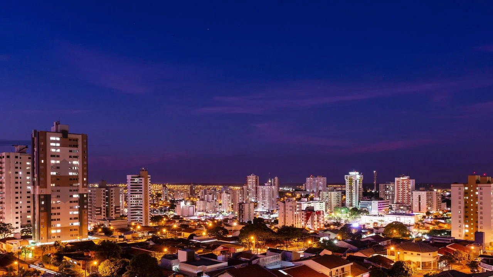
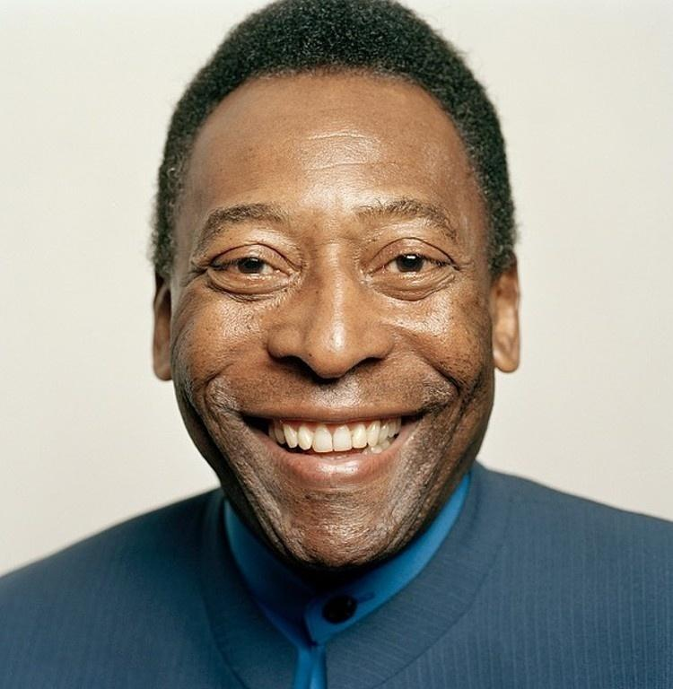
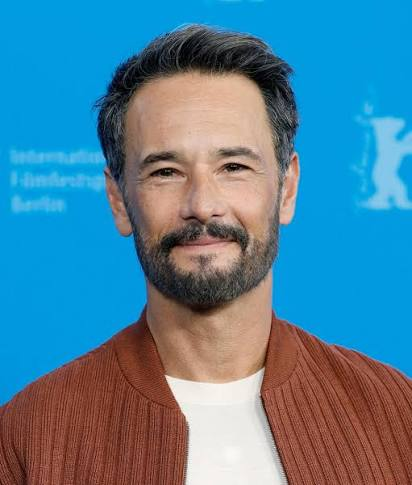
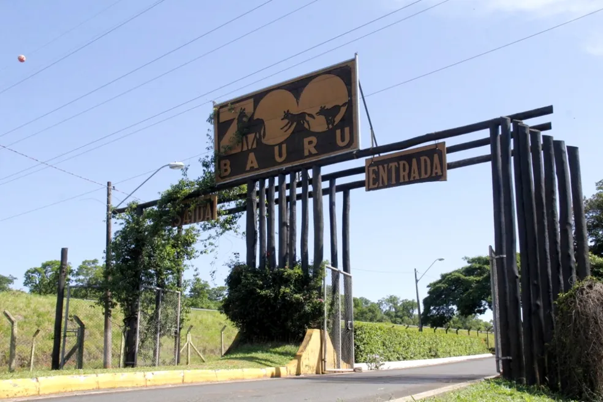
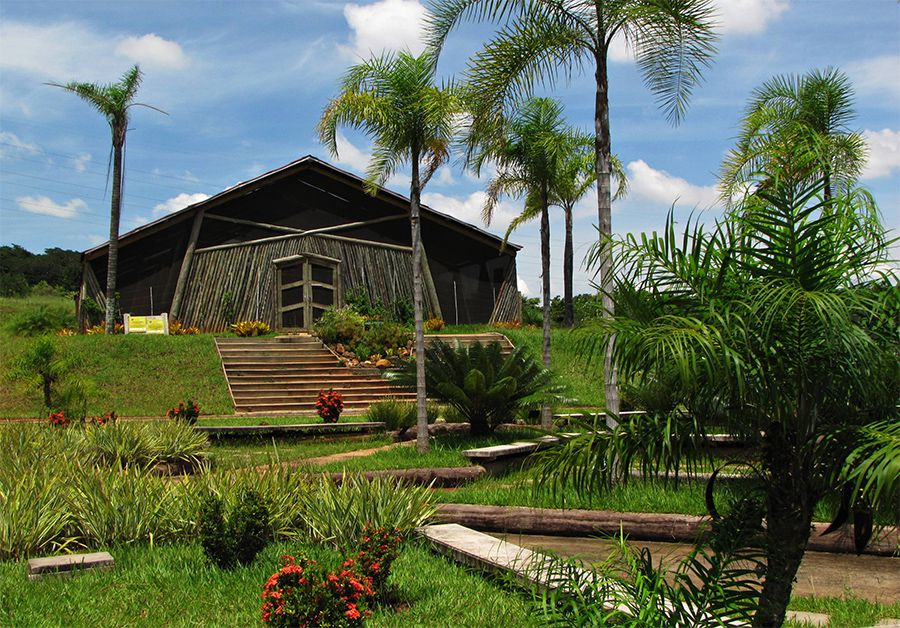
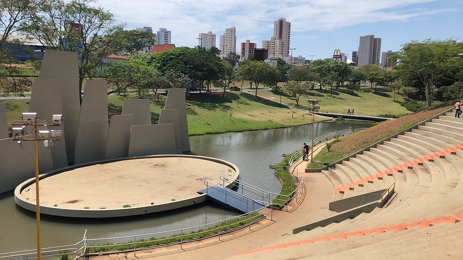
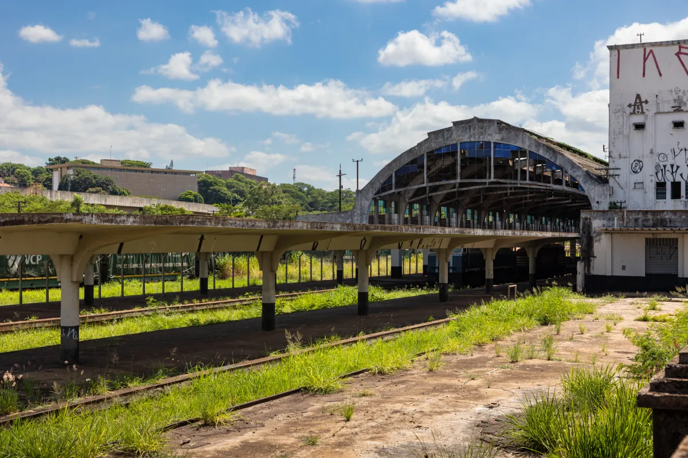
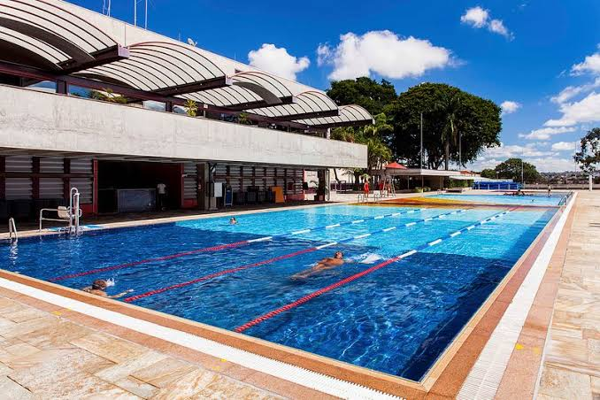

Descubra a história, os principais pontos turísticos e as curiosidades da cidade sem limites.
A cidade de Bauru, localizada no interior do estado de São Paulo, possui uma história marcada pelo desenvolvimento ferroviário e pela expansão urbana.
O crescimento da cidade foi impulsionado pela chegada das ferrovias no início do século XX, tornando-se um importante centro regional.
Além disso, Bauru é conhecida nacionalmente pelo famoso sanduíche que leva seu nome.

O rei do futebol brasileiro nasceu na cidade de Três Corações-MG mas, com apenas 4 anos, se mudou para Bauru. Aqui, jogou em times infanto-juvenis como Canto do Rio, Ameriquinha e Baquinhos. Além disso, o time bauruense, Sete de Setembro, foi montado pelo pai de Pelé.

Ator brasileiro reconhecido internacionalmente por filmes e séries de grande sucesso.

Primeiro astronauta brasileiro e um dos grandes nomes da ciência nacional.
Cantor sertanejo que realizou parte de sua formação artística na região.
Fundador da Embraer – Empresa Brasileira de Aeronáutica S.A, Ozires Silva é bauruense e foi na cidade que sua paixão por aviões começou. Mais especificamente no aeroclube de Bauru.

Um dos maiores zoológicos do Brasil, com centenas de espécies e referência em conservação ambiental.

Área verde com trilhas, lago e diversas espécies da flora brasileira, ideal para caminhadas e lazer.

Principal parque urbano da cidade, utilizado para eventos, esportes e passeios ao ar livre.

Marco histórico que simboliza o crescimento de Bauru graças às ferrovias no início do século XX.

Espaço dedicado à cultura, esporte, lazer e apresentações artísticas durante todo o ano.